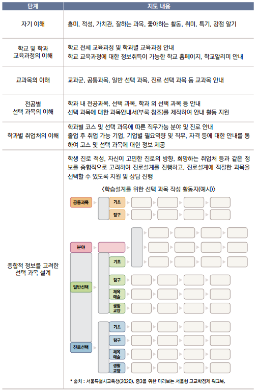

진로별 선택 과목 설계

1. 진로 연계 과목 안내 및 선택을 위한 상담
과목별 특성 및 평가 방법 등의 기본정보 제공
진로 및 취업과 연계된 과목 정보제공
전공별 위계 과목, 계열별 선택 가능 과목 정보 제공
취업 희망업체 정보 및 인력 유형 등 안내
과목안내서를 활용한 진로별 선택 과목 안내
2. 종합적 정보를 고려한 선택 과목 설계
다양한 진로 선택정보를 종합하여 학생 개인의 진로희망을 선택할 수 있도록 지원
진로희망에 따른 과목 선택 지원 및 상담 실시
세부 선택 과목 설계 지원 및 학생 선택 실시
3. 선택 과목 설계에 따른 학습설계 지원 및 상담
선택 과목에 따른 올바른 직업능력 향상을 위한 학습설계 지원
학교 내 다양한 프로그램 참여 안내(봉사활동, 동아리 활동, 독서 활동 등)
취득 희망 자격증, 취업 관련 참여 희망 프로그램 선택 지원
3개년 간의 내신 목표 수립 및 관리 지도
학업계획서 작성 지도